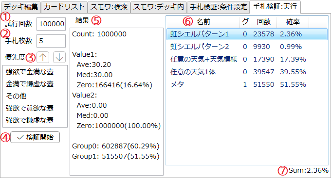

「手札検証:実行」タブ
現在のデッキにおける初手5枚の手札内容を検証する機能を実行するためのタブです。
このタブで設定した内容はアプリ設定に記憶され、次回以降の起動時に復元されます。
説明

-
試行回数
- 手札の引き直しを行う回数を指定します。
- マウスホイールを回すと1000ずつ変更できます。
- 初期値は10万となっていますが、擬似乱数の偏りの影響を軽減するため100万以上にしておくことを推奨します。
-
手札枚数
- 検証する手札の枚数を指定します。
- マウスホイールを回すと1ずつ変更できます。
- 先攻1ターン目なら 5、後攻1ターン目なら 6 にします。
-
ドローソース優先度
- いわゆる〈壺〉カードを含む、いくつかのドローソースの使用優先度を指定します。
-
項目をクリックし

 を押すことで優先度を変更できます。
を押すことで優先度を変更できます。
-
「その他」には、無条件にドローを行うことができる以下のカードが含まれます。
- 《強欲な壺》
- 《成金ゴブリン》
- 《チキンレース》
- 《無の煉獄》
- 当然ながら、ここでの優先度の指定に関わらずデッキに採用されていないドローソースは使われません。
-
検証開始ボタン
- 手札検証を開始します。詳細は下記手札検証の詳細を参照してください。
-
結果:概要
- 検証結果の概要が表示されます。詳細は下記手札検証の詳細を参照してください。
-
結果:条件別
- 「手札検証:条件設定」タブで設定された条件項目ごとに、それが適合した回数と、全検証に対するその割合(確率)を一覧で表示します。
- Ctrlキーを押しながら項目をクリックすると複数選択を行います。
- Shiftキーを押しながら項目をクリックすると範囲選択を行います。
- 項目を1つ以上選択すると、リストの右下に「確率」の総計が表示されます。
-
割合総計
- 「結果:条件別」リストで選択されている項目の「確率」をまとめたものが表示されます。
-
同じグループの「確率」は全て加算されます。
- すなわち、「全検証のうち、選択されている条件のいずれか1つが適合した割合」を示します。
-
異なるグループの「確率」は全て乗算されます。
- すなわち、「全検証のうち、選択されている条件が全て適合した割合」を示します。